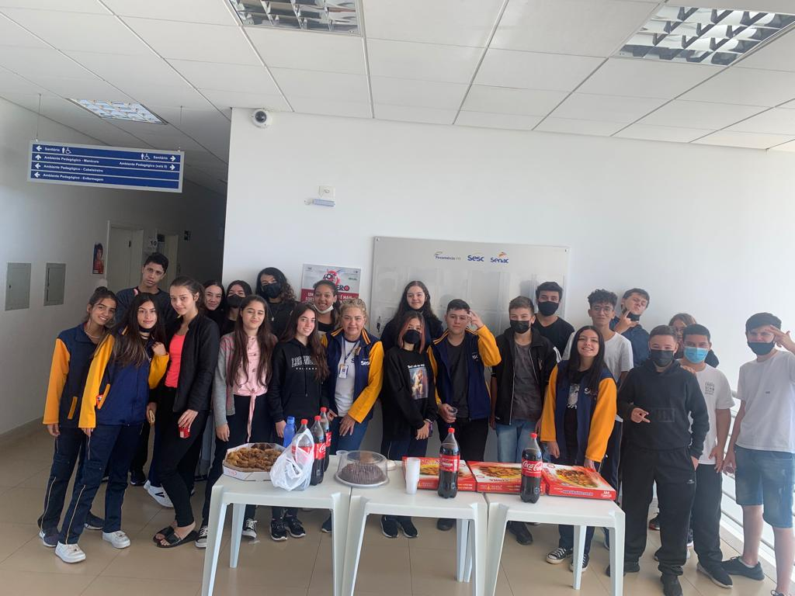

Turma do Colégio Integrado Sesc Senac
.jfif)
Quem somos?
Temos orgulho de ser a instituição que somos, coerentes com o nosso compromisso com a educação e a sociedade. Oferecemos ensino sólido e inovador, sempre conectado ao mundo do trabalho. Nosso modelo educacional contempla formação para a cidadania, a autonomia e o empreendedorismo, é inclusivo, estimula nossos alunos a serem protagonistas de suas próprias histórias.
É o Jeito Senac de Educar. Construímos nossa trajetória a partir desses valores, e também de tantas histórias de vida que passaram pela instituição. São inspiradoras, porque contam sobre pessoas e o que elas conseguiram transformar por meio da educação.
Fortalecemos e compartilhamos essa corrente de oportunidades, ampliando o número de unidades e bolsas de estudo. Afinal, está no nosso propósito tornar a educação de qualidade acessível a todos. Tanto que, dos mais de 640 mil atendimentos que o Senac São Paulo realiza por ano, 130 mil correspondem a bolsas de estudos integrais, e mais de 40 mil são pela Política de Responsabilidade Social. E aqui, os jovens recebem atenção especial. Por meio do Programa Senac de Aprendizagem, eles se prepararam para o primeiro emprego, com formação voltada à sala de aula e à vivência profissional.
A turma do 1° Ano do Sesc/Senac

A turma do 1° Ano Sesc/Senac 2022 é composta por 24 alunos, os alunos possuem aulas de programação e aulas técnicas que entram em disciplinas transversais...a turma no começo do ano letivo era considerada a pior turma do SENAC de 2022, porém ao decorrer do ano a turma em geral foi melhorando e atualmente é uma turma muito melhor em conjunto e sabem trabalhar em equipe, sem contar que atualmente eles possuem uma relação muito melhor com os professores.
O que é o Ensino Médio Integrado ao Técnico?
O ensino médio integrado ao técnico é um modelo educacional que proporciona aos estudantes a possibilidade de terminar o curso escolar com uma formação profissional, capacitado para o mercado de trabalho, ampliando as oportunidades e permitindo maior direcionamento em relação à carreira